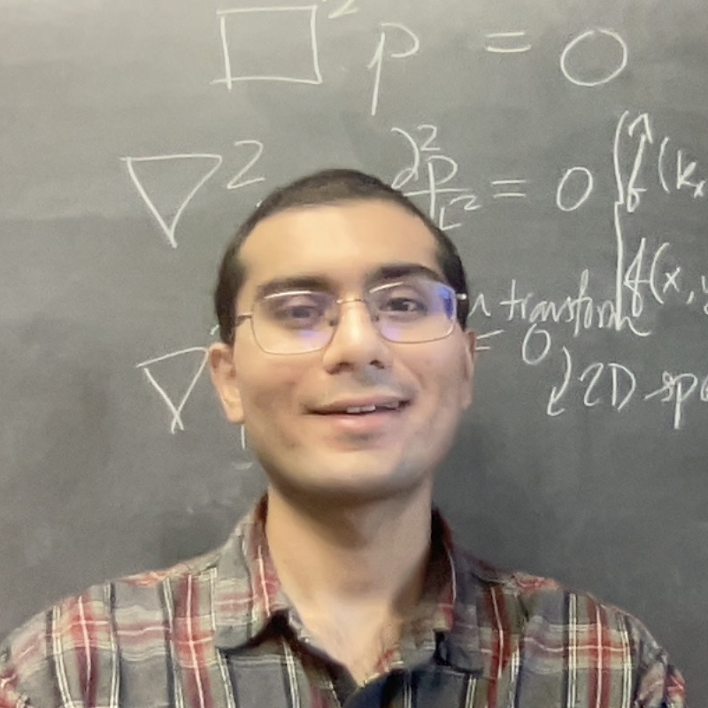

I am a 3rd-year PhD student in acoustics at the University of Texas at Austin. I am co-advised by Prof. Michael Haberman and Prof. Mark Hamilton and am studying vortex beams, radiation force, and bianisotropy. My work is theoretical, with applications in biomedical acoustics, advanced manufacturing, and sensor design.
As a student member of the Acoustical Society of America (ASA), I enjoy serving as a room monitor and Student Outreach for Networking and Integrating Colleagues mentor at the biannual meetings. Currently, I serve as the Biomedical Acoustics Technical Committee (BATC) Student Council Representative.
In my free time, I enjoy being in thunderstorms, playing in waves at the beach, and getting stuck in traffic jams!
CV | chiragokani [at] gmail.com
